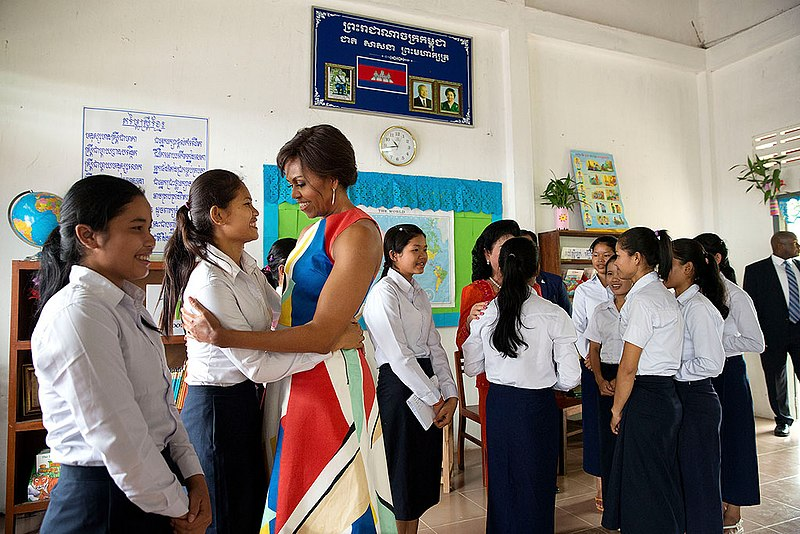
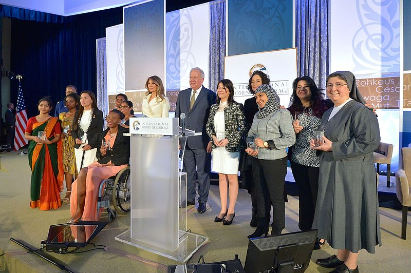

Women's Empowerment
Former First Lady Michelle Obama greets students during a Room to Read event with First Lady Bun Rany of Cambodia in support of the Let Girls Learn initiative, at Hun Sen Prasat Bakong High School in Siem Reap, Cambodia, March 21, 2015. Women's empowerment is the process in which women elaborate and recreate what it is that they can be, do, and accomplish in a circumstance that they previously were denied Alternatively, it is the process for women to redefine gender roles that allows for them to acquire the ability to choose between known alternatives whom have otherwise been restricted from such an ability.  There are several principles defining women's empowerment such as, for one to be empowered, they must come from a position of disempowerment. Furthermore, one must acquire empowerment themselves rather than have it given to them by an external party. Other studies have found that empowerment definitions entail people having the capability to make important decisions in their lives while also being able to act on them. Lastly, empowerment and disempowerment is relative to other at a previous time; therefore, empowerment is a process, not a product.
Women empowerment has become a significant topic of discussion in development and Economics. It can also point to the approaches regarding other trivialized genders in a particular political or social context.
Women's Economic empowerment refers to the ability for women to enjoy their right to control and benefit from the resources, Asset, income and their own time, as well as the ability to manage risks and improve their economic status and well being.
While often interchangeably used, the more comprehensive concept of gender empowerment
Importance of women's empowerment in societies
Entire nations, businesses, communities and groups can benefit from the implementation of programs and policies that adopt the notion of women empowerment.Empowerment of women is a necessity for the very development of a society, since it enhances both the quality and the quantity of human resources available for development Empowerment one of the main procedural concerns when addressing Human rights and development.
Methods
Scholars have identified two forms of empowerment, economic empowerment and political empowerment.
Economic empowerment
Economic empowerment increases women's agency, access to formal government programs, mobility outside the home, economic independence, and purchasing power. Policy makers are suggested to support job training to aid in entrance in the formal markets.[6] One recommendation is to provide more formal education opportunities for women that would allow for higher bargaining power in the home. They would have more access to higher wages outside the home; and as a result, make it easier for women to get a job in the market.
Strengthening women's access to property inheritance and land rights is another method used to economically empower women. This would allow them better means of asset accumulation, capital, and bargaining power needed to be address gender inequalities. Often, women in developing and underdeveloped nations are legally restricted from their land on the sole basis of gender. Having a right to their land gives women a sort of bargaining power that they wouldn't normally have; in turn, they gain more opportunities for economic independence and formal financial institutions.
Another popular methodology for women's economic empowerment also includes Microcredit. Microfinance institutions aim to empower women in their community by giving them access to loans that have low interest rates without the requirement of collateral.More specifically, they aim to give microcredit to women who want to be entrepreneurs.[10] The success and efficiency of microcredit and microloans is controversial and constantly debated. Some critiques claim that microcredit alone doesn't guarantee women have control over the way it is used. Microfinance institutions don't address cultural barriers that allow men to still control household finances; as a result, microcredit may simply be transferred to the husband. Microcredit doesn't relieve women of household obligations, and even if women have credit, they don't have the time to be as active in the market as men.
Political empowerment
Political empowerment supports creating policies that would best support gender equality and agency for women in both the public and private spheres. Popular methods that have been suggested are to create affirmative action policies that have a quota for the number of women in policy making and parliament positions.[8] As of 2017, the global average of women whom hold lower and single house parliament positions is 23.6 percent. Further recommendations have been to increase women's rights to vote, voice opinions, and the ability to run for office with a fair chance of being elected. Because women are typically associated with child care and domestic responsibilities in the home, they have less time dedicated to entering the labour market and running their business. Policies that increase their bargaining power in the household would include policies that account for cases of divorce, policies for better welfare for women, and policies that give women control over resources (such as property rights). However, participation is not limited to the realm of politics. It can include participation in the household, in schools, and the ability to make choices for oneself. Some theorists believe that bargaining power and agency in the household must to be achieved before one can move onto broader political participation. When women have the agency to do what they want, a higher equality between men and women is established.
Measurement and assessment
Women empowerment can be measured through the Gender Empowerment Measure (GEM), which shows women's participation in a given nation, both politically and economically. GEM is calculated by tracking "the share of seats in parliament parliament held by women; of female legislators, senior officials and managers; and of female profession and technical workers; and the Gender disparity in earned income, reflecting economic independence".[4] It then ranks countries given this information. Other measures that take into account the importance of female participation and equality include: the gender parity index and the Gender releated Developmnent index (GDI).
Some critiques of GEM is that it is not concerned with factors regarding society, such as gender, religion, cultural context, legal context, and violations of women's rights. Gender empowerment measure attempts to makes a consistent standardized approach to measure women's empowerment; in doing so, it has been critiqued that the GEM doesn't account for variation in historical factors, female autonomy, gender segregation, and women's right to vote.
The Gender-related Development Index (GDI) is a way in which the United Nations Development Programme (UNDP) measures the inequality between genders within a country. Some critique of this measurement is that, because GDI calculations rely solely on the achievement distribution between males and females of a population, GDI doesn't measure gender inequality; rather, it measures absolute levels on income, education and health.
A more qualitative form of assessing women's empowerment is to identify constraints to action. This allows for the identification of power relations between genders. Because this is a participatory process, it facilitates conversation on gender discrimination. Comparing constraints on women at a later time also allows for any changes or expansion to be better identified. The evaluation of the development of women's agency allows for an evaluation of actions taken. These assessments must also be based on the action taken by women, and not external groups. External groups can help facilitate women's empowerment, but cannot bestow it on them.
Barriers
Many of the barriers to women's empowerment and equity lie ingrained in cultural norms. Many women feel these pressures, while others have become accustomed to being treated inferior to men. Even if men, lagislators,NGOs, etc. are aware of the benefits women's empowerment and participation can have, many are scared of disrupting the status of the women and continue to let societal norms get in the way of development.
Research shows that the increasing access to the internet can also result in an increased exploitation of women. Releasing personal information on websites has put some women's personal safety at risk. In 2010, Working to Halt Online Abuse stated that 73% of women were victimized through such sites. Types of victimization include cyber stalking, harassment, online Online pornography, and flaming Sexual harassment in particular is a large barrier for women in the workplace. It appears in almost all industries, but is most notable in the following: business, trade, banking and finance, sales and marketing, hospitality, civil service, and education, lecturing and teaching. According to the International Labour Organisation (ILO), sexual harassment is a clear form of gender discrimination based on sex, a manifestation of unequal power relations between men and women. Furthermore, the UN Convention on the Elimination of All Forms of Discrimination Against Women (CEDAW) is urging for increased measures of protection for women against sexual harassment and violence in the workplace. 54% (272) had experienced some form of workplace sexual harassment. 79% of the victims are women; 21% were men.
Recent studies also show that women face more barriers in the workplace than do men. Gender-related barriers involve sexual harassment, unfair hiring practices, career progression, and unequal pay where women are paid less than men are for performing the same job. When taking the median earnings of men and women who worked full-time, year-round, government data from 2014 showed that women made $0.79 for every dollar a man earned. The average earnings for working mothers came out to even less—$0.71 for every dollar a father made, according to a 2014 study conducted by the National Partnership for Women and Children. While much of the public discussion of the "wage gap" has focused around women getting equal pay for the same work as their male peers, many women struggle with what is called the "pregnancy penalty". The main problem is that it is difficult to measure, but some experts say that the possibility of having a baby can be enough for employers to push women back from their line. Therefore, women are put in a position where they need to make the decision of whether to maintain in the workforce or have children. This problem has sparked the debate over maternity leave in the United States.
However, despite the struggle for equal pay in the United States, the tech industry has made progress in helping to encourage equal pay across gender. In March 2016, tech career website Dice released a study of more than 16,000 tech professionals that found that when you compare equivalent education, experience and position, there is no pay gap—and hasn't been for the last six years. This new industry is paving a way for other companies to do the same. However, this industry also struggles to employ women in executive positions. This is partially due to the barrier of sexual harassment and pregnancy that was aforementioned.
Such barriers make it difficult for women to advance in their workplace or receive fair compensation for the work they provide.
Role of education
It is said that education increases "people's self-confidence and enables them to find better jobs and they can work shoulder to shoulder with men". They engage in public debate and make demands on government for health care, social security and other entitlements". In particular, education empowers women to make choices that improve their children's health, their wellbeing, and chances of survival. Education informs others of preventing and containing disease, and it is an essential element of efforts to reduce malnutrition. Furthermore, it empowers women to make choices that can improve their welfare, including marrying beyond childhood and having fewer children. Crucially, education can increase women's awareness of their rights, boost their self-esteem, and provide them the opportunity to assert their rights.
Despite significant improvements in recent decades, education is not universally available and gender inequalities persist. A major concern in many countries is not only the limited numbers of girls going to school, but also the limited educational pathways for those that step into the classroom. More specifically, there should be more efforts to address the lower participation and learning achievement of girls in science, technology, engineering and mathematics (STEM) education.
The Internet as a tool of empowerment
The growing access of the web in the late 20th century has allowed women to empower themselves by using various tools on the Internet. With the introduction of the World Wide Web, women have begun to use social networking sites like Facebook and Twitter for online activism . Through online activism, women are able to empower themselves by organizing campaigns and voicing their opinions for equality rights without feeling oppressed by members of society. For example, on May 29, 2013, an online campaign started by 100 female advocates forced the leading social networking website, Facebook, to take down various pages that spread hatred about women.
In recent years blogging has also become a powerful tool for the educational empowerment of women. According to a study done by the University of California, Los Angeles, medical patients who read and write about their disease are often in a much happier mood and more knowledgeable than those who do not. By reading others' experiences, patients can better educate themselves and apply strategies that their fellow bloggers suggest.
With the easy accessibility and affordability of E-learning(Electronic learning), women can now study from the comfort of their homes. By empowering themselves educationally through new technologies like e-learning, women are also learning new skills that will come in handy in today's advancing globalized world.
Ongoing projects
The UN came out with a set of goals called the Sustainable Development Goals, or SDGs, to help make the world a better place Of the 17, the fourth goal works to allow access to education for all people alike. A large effort has been made to include women in schools to better their education. Similarly, the fifth goal focuses on empowering women and girls to achieve gender equality through equal access to various types of opportunities (health care, education, work, etc.).
There are also some prominent non-profits that help empower women:
- She should run
- Girls not bride
- The Malala Fund
- women's in Defense
- Women for Women International
- Every mothers counts
U.S involvement
Melania Trump with 2017 International Women of Courage Awardees Domestically, the U.S. empowered women through passings of laws such as allowing women to vote in 1920, banning discrimination based on gender in 1964, banning discrimination against pregnant women in 1978, etc. Additionally, the inclusion of women in politics allowed for more gender equality. The first female speaker of House, the first First Lady to run for president, and first women to serve on the Supreme Court were monumental events that proved socially the acceptance of "subservient" women.
 The U.S. provides foreign aid to third world countries in various forms, one of which is by providing education programs. There are currently bills in Congress that work to ensure education to girls, one of which is the Protecting Girls' Access to Education Act. These are enacted with the belief that proper education will pull them out of poverty and reduce exploitation.
Another action taken on by the U.S is the PEPFAR program, initiated by the Bush administration in 2003. The U.S. spent more than $1.4 billion in funding sub-Saharan Africa during the duration of the program. This program was taken into effect in response to the global HIV/AIDS crisis, and it promoted abstinence among young girls and women. There was a partnership with DREAMS, and its main purpose with PEPFAR was to allow both girls and women to develop into Determined, Resilient, Empowered, AIDS-free, Mentored, and Safe women. However, there are criticisms that this program did not really do much to reduce HIV risk behavior, and critics such as John Dietrich worried that the context of aid enforced Western beliefs of choosing abstinence before marriage. There was and still is controversy regarding the effectiveness of this program in reducing HIV/AIDS through advocating abstinence and whether this would actually empower women in Africa.